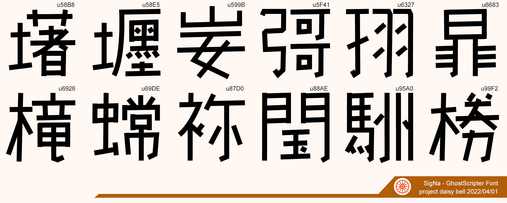

SigNaGhostScriptFont - 読めない文字でコミュニケーションする
あなたのコミュニケーションを『意味』から解き放つ。
SigNaGhostScriptFontは、
project daisy bell
による完全オリジナル日本語フリーフォントです。
商用可。
収録文字は以下の10文字です。

娯楽までコミュニケーション漬けの現代生活
ツイッター、ライン、メール。
ティックトック、電話、Web勉強会、YouTuber。
わたしたちの生活にはコニュニケーションが溢れています。
テレビやラジオのように、娯楽をただ浴びる時代はもうはるか昔。
こんにちでは娯楽にさえコミュニケーションが重要な要素として入り込んでいます。
YouTuber動画にコメントを書き込み、作品の感想をシェアしあうなど、『孤独に楽しめる』イメージの強い趣味ですら。
ときにはコニュニケーションこそがこのコンテンツの最大の価値なのだ、という顔さえしています。
しかし、感想欄に書いた褒めコメントについ強い言葉を使ってしまい、勘違いされるなんてこともしばしば。
（大好きな相手に悶えているコトを伝える言葉として「この女最低だな！」という言い回しを使って許されるのは、百合界隈くらいのものです。
おやつを投げる３歳児の姪っ子のLINE動画に対するコメントとして使ったなら、あなたが10割悪いでしょう。）
どうやったら勘違いされないんだろう、言葉を増やす？ 言い回しを丁寧にする？
たった120文字を何度も推敲して、疲れてしまいます。
私は物書きとして生計を立てているわけでもないのに、どうやったら相手に正しく伝わるなんて、日常の中でずっと気にしているのはとても大変。
そこで、SigNaGhostScriptFontが提案するあたらしい暮らしこそが、幽霊文字を使った
『読めないコミュニケーション』
なのです。
幽霊文字
「幽霊文字（ゆうれいもじ）は、JIS基本漢字に含まれる、典拠不明の文字（漢字）の総称。幽霊漢字（ゆうれいかんじ）、幽霊字（ゆうれいじ）とも呼ぶ。」
--
Wikipedia
より
幽霊文字とは、
人類の間違いの歴史の証拠 使われたことがなく、読み方もわからないのに『
存在a>』する、謎の10文字（＋その後の調査で見つかったいくつかの文字）からなる不思議な漢字群です。
「世界中の文字を集めてまとめる」というユニコードの計画において、使い方がわからないまま収録され、いまも確かに存在しています。
このあと人類が文字を失ったりさえしなければ、世界の終わりまで、幽霊文字は文字コードとともに存在しつづけるでしょう。
幽霊文字はきっと、日本語がなくなっても、英語がなくなっても、
Tofua>と共に存在し続けます。
読めない文字でコミュニケーションする
幽霊文字が現代社会においてすばらしいのは、『意味を持たない』という部分です。
意味を持たないならば、悪意をもったコメントだと勘違いされることもありません。
だって意味がない文字なんですから。
何か反応したい、でも何も思いつかない。
既読無視ってのもちょっとなぁ、という瞬間。
気の利いた絵文字やスタンプ、gif動画を探さなくても、あなたには幽霊文字があるのです。
幽霊文字のある暮らし
さあ、『幽霊文字のある新生活』をはじめましょう。
とても簡単です。
幽霊文字は読み方がないので入力できませんが、ここに用意した10文字を、コピーしておけば大丈夫。
「」
（コピーの方法：ロングタップという、コピーしたい文や文字の上に指をおいて数秒置くと、コピー機能が画面に出現します。）
（スマートフォン以外のヒトは良いようにしてください。）
PR:幽霊文字が画面のこちら側にある暮らし
project daisy bellでは、公式BOOTHで本フォントを使った『
幽霊文字活字風スタンプ』を販売しています。
3Dプリント印刷データも公開していますので、自分で3Dプリントすることもできますが、買ったほうが安いです。
便箋や封筒にスタンプするちょっとしたアクセントに。
北極の地下シェルターに保管して、人類の過ちを後世に伝える紙媒体の作成に。
コミュニケーションの勇気を出すためのお守りに。
画面のてまえ側にも幽霊文字のある、すてきな新生活をはじめませんか？
Donwload links
SigNaGhostScriptFontダウンロード! from "daisy bell" 公式ページその1.[pixiv booth]
Download SigNaGhostScriptFont! from "daisy bell" official page02.[SourceForge]
Join SigNaGhostScriptFont! and get free 3D print data.[GitHub]
姉妹フォント
TofuFont[GitHub]